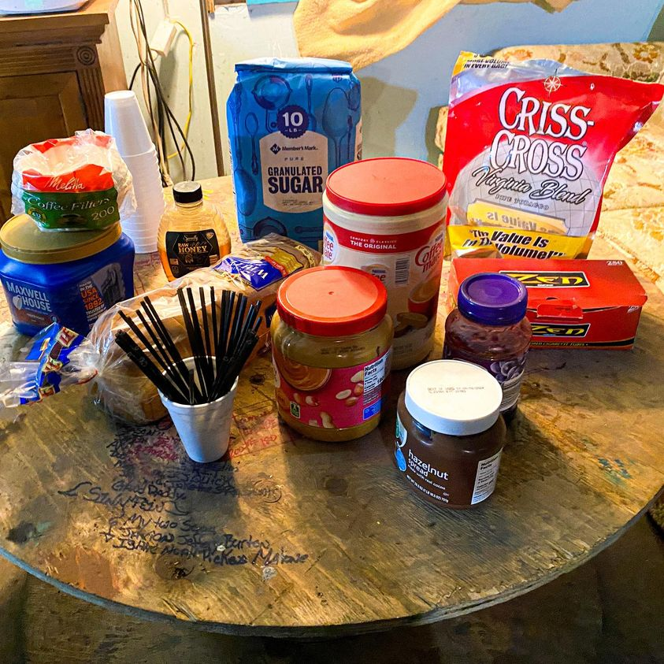

Timeline photos
I made the Church of the Nomadic Spirit specifically for the Houseless community. The basis is that we humans have been nomadic for hundreds of thousands of years. In the last 2000 years we have enslaved ourselves to the crops, the animals, and now the corporations. At best, it’s a questionable choice we’ve made for ourselves. At worst, we’ve allowed the system to turn us into slaves to make a few men unimaginably rich.
At any rate, we teach the message that the Houseless community is good, natural and loved.
Our weekly church service involves hanging out, listening to music and eating, drinking and smoking. These items are very intentionally provided to express unconditional love with zero obligation or agenda other than acceptance and love.
We are always in need of these items. If you are able to contribute them we would be extremely grateful.